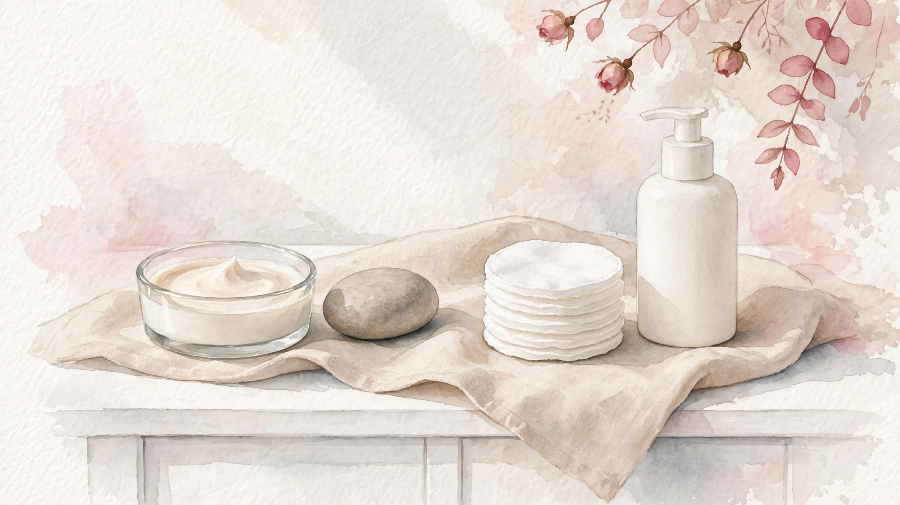

トップ ＞ スキンケア ＞ 手のひらで塗る／コットンで塗るの違い
手のひらで塗る／コットンで塗るの違い

化粧水は手のひらで塗る派と、コットンで塗る派に分かれます。施術のお客様からも「どちらが正しいんですか」と聞かれることがありますが、現場の感覚では、どちらにも得意なことがあります。この記事では、それぞれの特徴と、場面による使い分けを整理します。
手のひらは「温度」と「圧」が使える
手のひらで塗る良さは、温度と圧を調整できることです。手のひら全体で顔を包むように当てると、アイテムが温まりながら広がります。また、塗り残しや量の足りなさを、触った感触でその場で確かめられます。施術で手の感覚を頼りに仕事をしている立場からは、この「確かめながら塗れる」点が手のひらの一番の強みだと感じています。
進め方は、手のひらに出したアイテムを両手に広げ、頬、額、あごの順に、大きな面から当てていくのが基本です。こすらず、置くように当てるのがポイントです。
コットンは「むらなく広げる」のが得意
コットンの良さは、顔の広い範囲にむらなく広げやすいことです。手では届きにくい小鼻の脇や、額の際まで、均一に行き渡らせやすくなります。一方で、強くこすると摩擦が気になるため、滑らせる力加減には注意が必要です。コットンは十分に湿らせて、肌の上を滑らせるように使うのが基本です。
コットンの選び方も大切です。毛羽立ちの少ないタイプ、大きめで厚みのあるタイプなど、用途に合わせて選ばれている商品があります。拭き取り用とパッティング用では、適した作りが異なります。
場面で使い分ける
私自身は、朝の短い時間では手のひら、夜に時間をかけるときはコットン、というように使い分けることがあります。また、アイテムによっても相性があります。とろみのあるタイプは手のひら、さらっとしたタイプはコットン、といった具合です。
どちらか一方に決める必要はありません。「今日はどちらの気分か」で選んでもいいのです。大切なのは、こすりすぎないことと、量を確かめながら進めること。その2点は、どちらの方法でも共通です。
どちらの方法でも、始める前の基本は手を清潔にしておくことです。手のひらで塗る場合は特に、手に付いた汚れがそのまま顔に移ります。施術の現場では、手洗いからケアが始まります。また、コットンを使う場合は、繊維が残らないよう、最後に手のひらで全体を軽く押さえると仕上がりが安定します。方法同士を組み合わせることも、実は現場ではよくあることです。
旅行先や外出先では、コットンの方が持ち運びしやすい、といった実用面の違いもあります。方法の選択は、肌の感覚だけでなく、生活の場面全体で決めてよいものです。
セラフィナ「手のひらとコットンは、どっちが正解じゃなくて、場面で選ぶものなんだね」